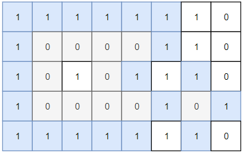
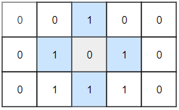

1254. 统计封闭岛屿的数目
先 DFS 淹掉所有贴着边界的 0（它们连着界外），再数内部剩下的 0 连通块，每发现一座淹掉一座。
思路
- 这题
0是陆地、1是水；「封闭岛」是不接触边界的0连通块。 - 第一步：对四条边上的每个格子，是
0就 DFS 淹成1——贴边的岛必然不封闭，先排除。 - 第二步：从
(1,1)扫到(m-2,n-2)，扫到剩下的0就是封闭岛：ans++并 DFS 淹掉整个连通块。 - 淹掉即「访问标记」，不用额外
visited数组；每格最多进一次 DFS，总计 O(mn)。
图解
最优解
1class Solution {2 public int closedIsland(int[][] grid) {3 int m = grid.length, n = grid[0].length;4 // 贴着边界的 0 连着界外，永远不封闭，先全部淹成 15 for (int j = 0; j < n; j++) {6 flood(grid, 0, j);7 flood(grid, m - 1, j);8 }9 for (int i = 0; i < m; i++) {10 flood(grid, i, 0);11 flood(grid, i, n - 1);12 }13 // 剩下的 0 连通块都和界外隔开了，每座淹掉一次并计数14 int ans = 0;15 for (int i = 1; i < m - 1; i++) {16 for (int j = 1; j < n - 1; j++) {17 if (grid[i][j] == 0) {18 ans++;19 flood(grid, i, j);20 }21 }22 }23 return ans;24 }25 26 // DFS 把 (i, j) 所在的 0 连通块全部淹成 127 private void flood(int[][] grid, int i, int j) {28 if (i < 0 || j < 0 || i >= grid.length || j >= grid[0].length || grid[i][j] != 0) return;29 grid[i][j] = 1;30 flood(grid, i + 1, j);31 flood(grid, i - 1, j);32 flood(grid, i, j + 1);33 flood(grid, i, j - 1);34 }35}题目
二维矩阵 grid 由 0 （土地）和 1 （水）组成。岛是由最大的4个方向连通的 0 组成的群，封闭岛是一个 完全 由1包围（左、上、右、下）的岛。
请返回 封闭岛屿 的数目。
示例 1：

输入：grid = [[1,1,1,1,1,1,1,0],[1,0,0,0,0,1,1,0],[1,0,1,0,1,1,1,0],[1,0,0,0,0,1,0,1],[1,1,1,1,1,1,1,0]] 输出：2 解释： 灰色区域的岛屿是封闭岛屿，因为这座岛屿完全被水域包围（即被 1 区域包围）。
示例 2：

输入：grid = [[0,0,1,0,0],[0,1,0,1,0],[0,1,1,1,0]] 输出：1
示例 3：
输入：grid = [[1,1,1,1,1,1,1],
[1,0,0,0,0,0,1],
[1,0,1,1,1,0,1],
[1,0,1,0,1,0,1],
[1,0,1,1,1,0,1],
[1,0,0,0,0,0,1],
[1,1,1,1,1,1,1]]
输出：2
提示：
1 <= grid.length, grid[0].length <= 1000 <= grid[i][j] <=1
题面取自力扣当前版本。
数据快照 2026-11-04。题面版权归力扣所有，本站点仅供本人学习使用，请勿对外发布。